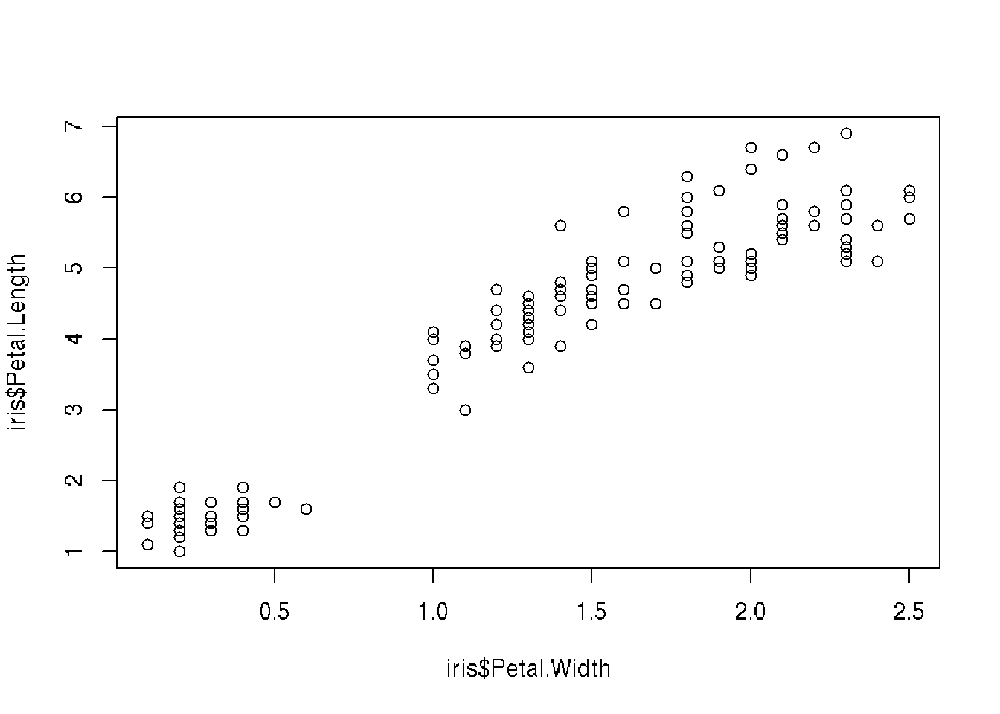
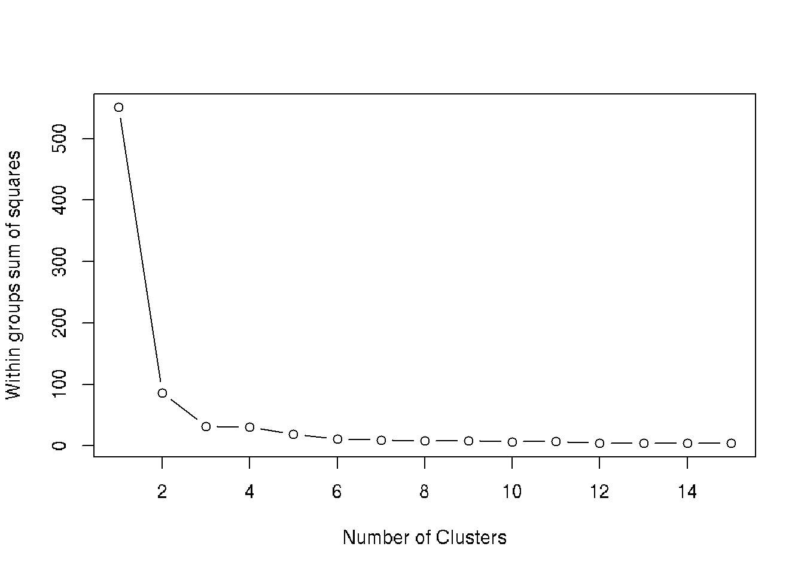

Chapter 14 Clustering
5 classes of clustering methods:
1. Partitioning methods - split into k-groups (k-means, k-dedoids (PAM), CLARA)
2. Hierarchical clustering
3. Fuzzy clustering
4. Density-based clustering
5. Model-based clustering
bv <- read.table("./DATA/beverage.csv", header=T, sep=";")
head(bv)
# no needs to normalize because all data is binary (0,1)
# Hierarchical clustering
# dist - calculate distances
# hclust - hierarchical clustering
clust.bv <- hclust(dist(bv[,2:9]), "ward.D")
clust.bv
# Plot clusters
plot(clust.bv)
plot(clust.bv, hang = -1)
rect.hclust(clust.bv, k=3, border="red")
# Group data by clusters
groups <- cutree(clust.bv, k=3)
groups
# Percentage in broups by drinking different beverages
colMeans(bv[groups==1, 2:9])*100
colMeans(bv[groups==2, 2:9])*100
colMeans(bv[groups==3, 2:9])*100
# Interpretation
# 1. People who does not have specific preference
# 2. People who prefers cola and pepsi
# 3. Not clear (others)
# atributes of cluster analysis
names(clust.bv)
# chronic of combining
clust.bv$merge
clust.bv[1]
clust.bv$height
clust.bv$order
clust.bv$labels
clust.bv$method
clust.bv$call
clust.bv$dist.method
# Detect the best choice for number of cluster by elbow-plot
plot(1:33, clust.bv$height, type="l")
### Task. Analyse data and find groups of people
# Scores (0,10) of 10 tests for candidates to get a job.
# 1. Memorizing numbers
# 2. Math task
# 3. Solving tasks in dialoge
# 4. Algorithms
# 5. Self confidence
# 6. Work in group
# 7. Find solution
# 8. Collaboration
# 9. Acceptance by others
setwd("~/DataAnalysis")
job <- read.table("DATA/assess.dat", header=T, sep="\t")
job
# Clustering
clust.job <- hclust(dist(job[,3:ncol(job)]), "ward.D")
# no needs to normalize, because all numbers have the same min, max
plot(clust.job) # visual number of clusters is 4
# Group data by clusters
groups <- cutree(clust.job, k=4)
groups
colMeans(job[groups==1, 3:12])*100
### Find clusters using k-means method
setwd("~/DataAnalysis")
bv <- read.table("DATA/beverage.csv", header=T, sep=";")
bv
dim(bv)
names(bv)
# k-means clustering, with initial 3 clusters
# nstart = x - run x times with different initial clusters
summ.1 = kmeans(bv[,2:9], 3, iter.max = 100)
names(summ.1)
# Objects by clusters
summ.1$cluster
# Centers of clusters
summ.1$centers
# 2 digits after point
options(digits=2)
t(summ.1$centers)
options(digits=7)
# Square summs
summ.1$withinss
# Summ of elements of vector
summ.1$tot.withinss
# sum(33*(apply(bv[,2:9], 2, sd))^2)
summ.1$totss
summ.1$tot.betweenss
# Size of clusters
summ.1$size
# Elbow plot to detect optimal number of clusters
wss <- (nrow(bv[,2:9])-1)*sum(apply(bv[,2:9],2,var))
for (i in 2:15) { wss[i] <- kmeans(bv[,2:9],
centers=i)$tot.withinss }
plot(1:15, wss, type="b", xlab="Number of Clusters",
ylab="Within groups sum of squares")
# We can see that diagram is rough. This is because clusters are not allways optimal
# To improve situation, we have to run many initiall start coordinates and choose the best
# option (add nstart=500):
wss <- (nrow(bv[,2:9])-1)*sum(apply(bv[,2:9],2,var))
for (i in 2:15) { wss[i] <- kmeans(bv[,2:9],
centers=i, nstart=500)$tot.withinss }
plot(1:15, wss, type="b", xlab="Number of Clusters",
ylab="Within groups sum of squares")
# Warnings means that iterations were not finished for some cases.
# Let's compair results for 3 and 4 clusters
summ.1 = kmeans(bv[,2:9], 3, iter.max=100)
summ.2 = kmeans(bv[,2:9], 4, iter.max=100)
# Compair clusters. How many elements in each cluster
# We can see how elements move if we take more clusters
table(summ.1$cluster, summ.2$cluster)
# Multidimentional scaling
# Project multidimentional data to 2d
bv.dist <- dist(bv[,2:9])
bv.mds <- cmdscale(bv.dist)
plot(bv.mds, col = summ.1$cluster, xlab="Index", ylab="")
# Detect optimal number of clusters
install.packages("NbClust")
library("NbClust")
Best <- NbClust(bv[,2:9], # data
distance="euclidean", # distance method
min.nc=2, # min number of clusters
max.nc=8, # max number of clusters
method="ward.D", # ward methodes
index = "alllong" ) # choose indices14.1 Next part
library(cluster)
library(factoextra)
Distances:
stats::dist()
factoextra::get_dist() # compute a distance matrix between the rows of a data matrix
factoextra::fviz_dist() # visualize distance matrix
cluster::daisy() # handle both numeric and not numeric (nominal, ordinal,...) data types
d <- factoextra::get_dist(USArrests, stand = TRUE, method = 'pearson')
factoextra::fviz_dist(d, gradient = list(low='blue', mid='white', high='red'))
#####
library(tidyverse)
library(cluster)
library(factoextra)
data <- USArrests %>% na.omit() %>% scale()
data
factoextra::fviz_nbclust(data, kmeans, method = 'gap_stat')
km.res <- kmeans(data, 3, nstart = 25)
factoextra::fviz_cluster(km.res, data = data,
ellipse.type = 'convex',
palette = 'jco',
repel = TRUE,
ggtheme = theme_minimal())
# PAM clustering
pam.res <- cluster::pam(data, 4)
factoextra::fviz_cluster(pam.res)
# CLARA clustering
clara.res <- clara(df, 2, samples = 50, pamLike = TRUE)
clara.res
dd <- cbind(df, cluster = clara.res$cluster)
# Medoids
clara.res$medoids
# Clustering
head(clara.res$clustering,10)14.2 Example
library(datasets)
head(iris)## Sepal.Length Sepal.Width Petal.Length Petal.Width Species id
## 1 5.1 3.5 1.4 0.2 setosa 1
## 2 4.9 3.0 1.4 0.2 setosa 2
## 3 4.7 3.2 1.3 0.2 setosa 3
## 4 4.6 3.1 1.5 0.2 setosa 4
## 5 5.0 3.6 1.4 0.2 setosa 5
## 6 5.4 3.9 1.7 0.4 setosa 6# Plot Petal.Length ~ Petal.Width data
plot(iris$Petal.Length ~ iris$Petal.Width)
set.seed(20)
# Find number of clusters using wss
wss <- (nrow(iris[, 3:4])-1)*sum(apply(iris[, 3:4],2,var))
for (i in 2:15) wss[i] <- sum(kmeans(iris[, 3:4], i)$withinss)
plot(1:15, wss, type="b", xlab="Number of Clusters", ylab="Within groups sum of squares")
#More than 3 clusters give no obvious advantages
# Make k-means with 3 clasters
ncl <- 3
irisCluster <- kmeans(iris[, 3:4], ncl, nstart = 20)
irisCluster## K-means clustering with 3 clusters of sizes 48, 50, 52
##
## Cluster means:
## Petal.Length Petal.Width
## 1 5.595833 2.037500
## 2 1.462000 0.246000
## 3 4.269231 1.342308
##
## Clustering vector:
## [1] 2 2 2 2 2 2 2 2 2 2 2 2 2 2 2 2 2 2 2 2 2 2 2 2 2 2 2 2 2 2 2 2 2 2 2 2 2 2 2 2 2 2 2 2 2 2 2 2 2 2 3 3 3 3 3 3 3 3 3 3 3 3 3 3 3 3 3 3 3 3 3 3 3
## [74] 3 3 3 3 1 3 3 3 3 3 1 3 3 3 3 3 3 3 3 3 3 3 3 3 3 3 3 1 1 1 1 1 1 3 1 1 1 1 1 1 1 1 1 1 1 1 3 1 1 1 1 1 1 3 1 1 1 1 1 1 1 1 1 1 1 3 1 1 1 1 1 1 1
## [147] 1 1 1 1
##
## Within cluster sum of squares by cluster:
## [1] 16.29167 2.02200 13.05769
## (between_SS / total_SS = 94.3 %)
##
## Available components:
##
## [1] "cluster" "centers" "totss" "withinss" "tot.withinss" "betweenss" "size" "iter" "ifault"# Compair result of clustering with real data (3 species of iris are in analysis)
table(irisCluster$cluster, iris$Species)##
## setosa versicolor virginica
## 1 0 2 46
## 2 50 0 0
## 3 0 48 4# Plot data
clusters <- split.data.frame(iris, irisCluster$cluster)
xlim <- c(min(iris$Petal.Width), max(iris$Petal.Width))
ylim <- c(min(iris$Petal.Length), max(iris$Petal.Length))
col <- c('red', 'green', 'blue')
plot(0, xlab='Petal width', ylab='Petal length', xlim=xlim, ylim=ylim)
for ( i in 1:ncl ) {
points(clusters[[i]]$Petal.Length ~ clusters[[i]]$Petal.Width, col=col[i], xlim=xlim, ylim=ylim)
}
14.3 NEXT PART
# K-Nearest Neighbors or KNN is a clustering algorithm
# k is known number of clusters (usually sqrt(N), between 3-10, but may be different)
# samples must be normalized x = (x - min(x))/(max(x)-min(x))
head(iris)
summary(iris) # detailed view of the data set
str(iris) # view data types, sample values, categorical values, etc
plot(iris)
#normalization function
min_max_normalizer <- function(x)
{
num <- x - min(x)
denom <- max(x) - min(x)
return (num/denom)
}
#normalizing iris data set
normalized_iris <- as.data.frame(lapply(iris[1:4], min_max_normalizer))
#viewing normalized data
summary(normalized_iris)
#checking the data constituency
table(iris$Species)
#set seed for randomization
set.seed(1234)
# setting the training-test split to 67% and 33% respectively
random_samples <- sample(2, nrow(iris), replace=TRUE, prob=c(0.67, 0.33))
# training data set
iris.training <- iris[
random_samples ==1, 1:4]
#training labels
iris.trainLabels <- iris[
random_samples ==1, 5]
# test data set
iris.test <- iris[
random_samples ==2, 1:4]
#testing labels
iris.testLabels <- iris[
random_samples ==2, 5]
#setting library
library(class)
#executing knn for k=3
iris_model <- knn(train = iris.training, test = iris.test, cl = iris.trainLabels, k=3)
#summary of the model learnt
iris_model